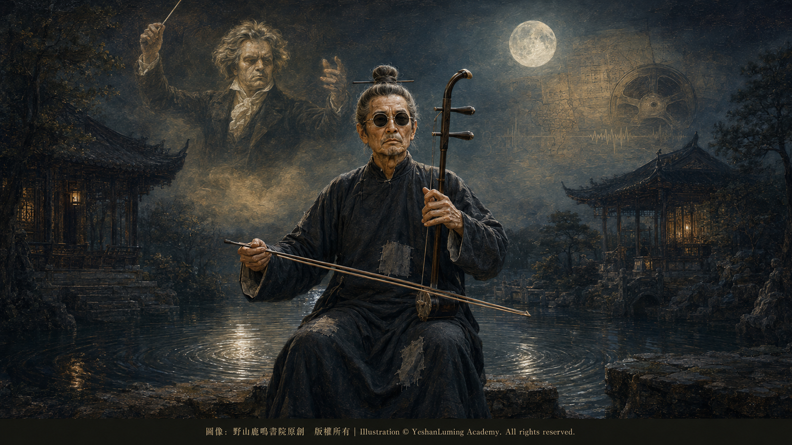

命運的交響與孤獨的長歎·貝多芬與瞎子阿炳的靈魂對話The Symphony of Fate and a Solitary Sigh · A Dialogue Between the Souls of Beethoven and Blind Musician Abing
China’s Beethoven · Blind Musician AbingThe Symphony of Fate and a Solitary Sigh · A Dialogue Between the Souls of Beethoven and Blind Musician Abing
China’s Beethoven · Blind Musician Abing命運的交響與孤獨的長歎·貝多芬與瞎子阿炳的靈魂對話
中國的貝多芬·瞎子阿炳
中國的貝多芬·瞎子阿炳（111）China’s Beethoven · Blind Musician Abing (111)
在中國近代音樂史上，很難再找到一個名字，能像「阿炳」一樣，將個人的肉體苦難與民族的藝術靈魂融合得如此深沉。
風雪交加的街頭、破舊的長衫，以及那把飽經風霜的二胡，構成了他後半生最令人難忘的剪影。然而，正是這具幾乎被命運逼入絕境的軀體，卻孕育出了中國近代音樂史上最震撼人心的聲音。
現在，人們把華彥鈞，也就是阿炳，譽為「中國的貝多芬」。這絕非一句簡單的廉價吹捧，並非盲目的文化攀附，更不是筆者在這裡杜撰。
如果將這兩位生活在不同時代、不同文化背景下的音樂巨匠放在一起審視，你會發現，他們的命運軌跡、與苦難搏鬥的方式，以及藝術絕唱的最終歸宿，竟然有著驚人而殘酷的相似性。
感官是人類認識世界、感受生命的重要通道。命運對他們最殘酷的懲罰，就是剝奪了他們賴以感知世界的能力，將他們放逐到常人難以想像的孤獨之中。
26歲前後，貝多芬開始察覺自己的聽力出現嚴重問題，到了晚年幾乎完全失去聽覺。
他在《海利根施塔特遺書》中絕望地感歎，自己身上那種原本應該比別人更加完美的感官，竟然變得如此衰弱。為了繼續演奏和感受鋼琴的聲音，他曾嘗試借助傳聲裝置，通過牙齒與顱骨感受鋼琴傳來的震動。在幾乎聽不見外界聲音的情況下，他只能依靠記憶、樂理、內在聽覺和驚人的精神意志，繼續建構自己龐大的音樂世界。
35歲左右，阿炳因嚴重的眼疾導致雙眼徹底失明。從此，他的世界陷入了長達20多年的黑暗。作為一名流浪藝人，失明意味著他無法看清道路，無法看見路人的表情，也無法擁有安穩的演奏環境。他只能每天背著沉重的樂器，靠一根竹竿摸索著走在無錫潮濕、冰冷的青石板路上，風雨無阻。
在中國近代音樂史上，很難再找到一個名字，能像「阿炳」一樣，將個人的肉體苦難與民族的藝術靈魂融合得如此深沉。
風雪交加的街頭、破舊的長衫，以及那把飽經風霜的二胡，構成了他後半生最令人難忘的剪影。然而，正是這具幾乎被命運逼入絕境的軀體，卻孕育出了中國近代音樂史上最震撼人心的聲音。
現在，人們把華彥鈞，也就是阿炳，譽為「中國的貝多芬」。這絕非一句簡單的廉價吹捧，並非盲目的文化攀附，更不是筆者在這裡杜撰。
如果將這兩位生活在不同時代、不同文化背景下的音樂巨匠放在一起審視，你會發現，他們的命運軌跡、與苦難搏鬥的方式，以及藝術絕唱的最終歸宿，竟然有著驚人而殘酷的相似性。
感官是人類認識世界、感受生命的重要通道。命運對他們最殘酷的懲罰，就是剝奪了他們賴以感知世界的能力，將他們放逐到常人難以想像的孤獨之中。
26歲前後，貝多芬開始察覺自己的聽力出現嚴重問題，到了晚年幾乎完全失去聽覺。
他在《海利根施塔特遺書》中絕望地感歎，自己身上那種原本應該比別人更加完美的感官，竟然變得如此衰弱。為了繼續演奏和感受鋼琴的聲音，他曾嘗試借助傳聲裝置，通過牙齒與顱骨感受鋼琴傳來的震動。在幾乎聽不見外界聲音的情況下，他只能依靠記憶、樂理、內在聽覺和驚人的精神意志，繼續建構自己龐大的音樂世界。
35歲左右，阿炳因嚴重的眼疾導致雙眼徹底失明。從此，他的世界陷入了長達20多年的黑暗。作為一名流浪藝人，失明意味著他無法看清道路，無法看見路人的表情，也無法擁有安穩的演奏環境。他只能每天背著沉重的樂器，靠一根竹竿摸索著走在無錫潮濕、冰冷的青石板路上，風雨無阻。
然而，歷史最震撼人心之處，就在於兩位大師都在漫長的寂靜與黑暗中，孕育出了各自浩瀚的音樂宇宙。他們的音樂之所以能夠產生跨越時空的共鳴，是因為他們都沒有向苦難低頭，而是將滿腔的憤怒、不屈與尊嚴化為了音符。
在面對不公的命運時，兩位大師展現了不同文化底蘊下的抗爭美學，卻又在藝術精神上達到了對立統一的境界。
貝多芬是「主動的扼住」。在耳聾最絕望的時期，他曾在給朋友的信中宣稱：「我要扼住命運的咽喉，它絕不能使我完全屈服！」這種強烈的主體意志與英雄主義，後來在《第五交響曲》，也就是後世通稱的《命運交響曲》中，得到了最震撼人心的藝術呈現。
那開篇標誌性的四音動機——「鏘、鏘、鏘、鏘——」，後世常把它形容為「命運在敲門」。隨後展開的宏大管弦交響，則像是人與命運之間一場驚心動魄的搏殺，音樂最終衝破黑暗，走向英雄式的勝利。
阿炳則以「沉鬱的掙扎與控訴」對抗命運。阿炳的抗爭比貝多芬更加悽楚，因為他身處半殖民地半封建社會的舊中國底層，連最基本的生存都難以維繫。
在《二泉映月》中，樂曲開篇那一聲低沉、迴轉的旋律，就像一聲從生命深處發出的長歎。那不是軟弱的哭泣，而是一個被命運逼入深淵的人，在黑暗中重新審視自己的一生。隨著旋律反覆變奏，音區逐漸擴展，情緒一層層推高，原本低沉的歎息也逐漸化為激烈而不屈的控訴。
二胡只有兩根弦，音量和共鳴遠不能與鋼琴或龐大的管弦樂團相比。然而，阿炳通過深沉的揉弦、強烈的弓法、力度的變化和旋律的層層推進，讓一把二胡發出了彷彿可以撕裂黑暗的聲音。那不是單純的悲傷，而是他用盡生命力量，對不公世界發出的控訴與反抗。
雖然靈魂同樣高貴，但兩人因時代與社會結構的差異，在現實世界中的社會地位卻有著雲泥之別。
貝多芬是出入宮廷的「樂聖」。雖然他一生也遭遇了情感與財務上的波折，但他成名很早，是維也納貴族與資產階級追捧的藝術先鋒。他可以傲慢地對公爵說：「公爵過去有的是，現在有的是，將來也有的是，而貝多芬只有一個。」
他生前已經享有歐洲重要作曲家的盛名。去世後，成千上萬的維也納市民更自發走上街頭為他送葬，場面極其宏大。無論生前還是身後，歐洲社會都給予了他與阿炳截然不同的地位與尊榮。
阿炳則是社會最底層的民間藝人。他的一生顛沛流離，失明後徹底淪為走街串巷的流浪音樂家。他不僅要忍受飢餓、寒冷和病痛的折磨，還要忍受地痞、流氓的欺凌。
1950年初秋，楊蔭瀏、曹安和等人帶著中央音樂學院的鋼絲錄音機來到無錫，準備為阿炳錄音。此時的阿炳因生活困苦、身體衰弱，已經多年很少演奏，也沒有一件可以正常使用的樂器。在黎松壽等人的協助下，他用借來二胡和琵琶，重新練習數日，最終留下了三首二胡曲和三首琵琶曲。這六首作品，成為他留給世界最後的音樂遺言。錄音完成僅僅幾個月後，阿炳便溘然長逝。他沒有隆重的葬禮，甚至連一張清晰的全身照片都沒有留下。
在人生的最後階段，兩位大師都通過音樂實現了靈魂的自我救贖，達到了超越世俗苦難的神聖境界。
貝多芬在徹底失聰的黑暗世界裡，沒有留下詛咒，反而寫出了《第九交響曲》。在經歷了命運的殘酷折磨後，他選擇原諒世界，在第四樂章中，以獨唱、合唱與龐大的管弦樂呼喚「四海之內皆兄弟」，將個人的苦難昇華為對全人類的博愛與光明讚歌。
阿炳則在生命的最後，將一生的顛沛流離、屈辱與孤獨，全部融化在了惠山二泉的月色之中。那不是一首簡單的、自怨自艾的悲歌，而是一個飽經滄桑的靈魂，在深夜與天地、與月光、與泉水的獨自對話。他超越了自身的肉體痛苦，把一個人的苦難，昇華為人類共同的孤獨、尊嚴與純淨。

Click to enlarge
貝多芬用西方龐大的管弦樂團——數十種樂器、上百人合奏——製造命運的宏大撞擊；而阿炳僅憑一把二胡、兩根琴弦和一個飽經滄桑的肉體，就在一個人的內心拉出了千軍萬馬的交響。
那一盤記錄著阿炳生命絕響的錄音鋼絲，不僅保存了阿炳留給世界的最後聲音，也成為中國傳統音樂錄音檔案中最珍貴的組成部分之一。1997年，中國藝術研究院收藏的「中國傳統音樂錄音檔案」，正式被聯合國教科文組織列入首批《世界記憶名錄》。這是中國第一項入選《世界記憶名錄》的珍貴檔案，也是世界上第一個入選該名錄的音響檔案。
阿炳留下的六首樂曲，正是這座龐大民族聲音寶庫中最耀眼的珍品之一。它們讓世界透過古老的錄音鋼絲，聽見了這位「中國的貝多芬」在命運泥淖中開出的、最倔強的藝術之花。
當我們今天再次聆聽那段從1950年穿越而來的琴聲，音質雖然帶著歷史的嘈雜，但音符背後的生命力卻依然滾燙。阿炳用他的二胡與琵琶證明了：肉體可以被摧殘，生活可以被踐踏，但高貴的靈魂與偉大的音樂，永遠無法被黑暗吞噬。
不管是西方的管弦交響，還是東方的一把二胡，當人類的靈魂被苦難逼入絕境時，音樂的形式可以不同，樂器的聲音可以不同，但人類在苦難中對尊嚴與光明的渴望，永遠彼此相通。
（未完待續）
In the history of modern Chinese music, it would be difficult to find another name like “Abing”—one that so profoundly fused the physical suffering of an individual with the artistic soul of a nation.
Snow-lashed streets, a tattered long gown, and an erhu weathered by the hardships of life formed the most unforgettable image of his later years. Yet it was precisely this body, driven almost to the brink of destruction by fate, that brought forth one of the most profoundly moving voices in the history of modern Chinese music.
Today, Hua Yanjun, better known as Abing, is celebrated as “China’s Beethoven.” This is by no means an empty piece of flattery, an act of blind cultural comparison, or a claim invented here by the author.
If we examine these two musical giants together—men who lived in different eras and within entirely different cultural traditions—we discover astonishing and cruel similarities in the paths of their lives, in the ways they struggled against suffering, and in the ultimate destinies of their musical testaments.
The senses are essential pathways through which human beings understand the world and experience life. Fate’s cruelest punishment was to deprive both men of a vital means of perceiving the world, exiling them into a solitude almost unimaginable to ordinary people.
At around the age of twenty-six, Beethoven began to realize that his hearing was seriously deteriorating. By his later years, he had become almost completely deaf.
In his *Heiligenstadt Testament*, he lamented in despair that the very faculty which should have been more perfect in him than in others had become so gravely impaired. To continue playing and sensing the sound of the piano, he experimented with devices that allowed him to feel its vibrations through his teeth and skull. When he could scarcely hear the sounds of the outside world, he had to rely on memory, musical theory, his inner ear, and an extraordinary force of will to continue constructing his immense musical universe.
At around the age of thirty-five, Abing became completely blind as a result of a severe eye disease. From that moment onward, his world was plunged into darkness for more than twenty years. For an itinerant musician, blindness meant that he could no longer see the road ahead, read the expressions of passersby, or enjoy any stable environment in which to perform. Day after day, he had to carry his heavy instruments and feel his way with a bamboo cane along the damp, frigid flagstone streets of Wuxi, regardless of wind or rain.
In the history of modern Chinese music, it would be difficult to find another name like “Abing”—one that so profoundly fused the physical suffering of an individual with the artistic soul of a nation.
Snow-lashed streets, a tattered long gown, and an erhu weathered by the hardships of life formed the most unforgettable image of his later years. Yet it was precisely this body, driven almost to the brink of destruction by fate, that brought forth one of the most profoundly moving voices in the history of modern Chinese music.
Today, Hua Yanjun, better known as Abing, is celebrated as “China’s Beethoven.” This is by no means an empty piece of flattery, an act of blind cultural comparison, or a claim invented here by the author.
If we examine these two musical giants together—men who lived in different eras and within entirely different cultural traditions—we discover astonishing and cruel similarities in the paths of their lives, in the ways they struggled against suffering, and in the ultimate destinies of their musical testaments.
The senses are essential pathways through which human beings understand the world and experience life. Fate’s cruelest punishment was to deprive both men of a vital means of perceiving the world, exiling them into a solitude almost unimaginable to ordinary people.
At around the age of twenty-six, Beethoven began to realize that his hearing was seriously deteriorating. By his later years, he had become almost completely deaf.
In his *Heiligenstadt Testament*, he lamented in despair that the very faculty which should have been more perfect in him than in others had become so gravely impaired. To continue playing and sensing the sound of the piano, he experimented with devices that allowed him to feel its vibrations through his teeth and skull. When he could scarcely hear the sounds of the outside world, he had to rely on memory, musical theory, his inner ear, and an extraordinary force of will to continue constructing his immense musical universe.
At around the age of thirty-five, Abing became completely blind as a result of a severe eye disease. From that moment onward, his world was plunged into darkness for more than twenty years. For an itinerant musician, blindness meant that he could no longer see the road ahead, read the expressions of passersby, or enjoy any stable environment in which to perform. Day after day, he had to carry his heavy instruments and feel his way with a bamboo cane along the damp, frigid flagstone streets of Wuxi, regardless of wind or rain.
Yet the most moving truth of history is that both masters, amid long years of silence and darkness, brought forth vast musical universes of their own. Their music resonates across time and space because neither man bowed before suffering. Instead, each transformed his anger, defiance, and dignity into musical notes.
In confronting the injustice of fate, the two masters revealed different aesthetics of resistance, shaped by their respective cultural traditions, yet reached a realm in which opposites became united through the spirit of art.
Beethoven sought to “seize fate by the throat.” During the most desperate period of his deafness, he declared in a letter to a friend: “I will seize Fate by the throat; it shall certainly never wholly overcome me!” This powerful assertion of individual will and heroism later found its most stirring artistic expression in the *Fifth Symphony*, commonly known to later generations as the *Fate Symphony*.
Its iconic opening four-note motif—“Da-da-da-daaa”—has often been described by later generations as “Fate knocking at the door.” The vast orchestral drama that follows unfolds like a terrifying struggle between humanity and fate, until the music finally bursts through the darkness and advances toward a heroic victory.
Abing, by contrast, resisted fate through “somber struggle and accusation.” His struggle was even more desolate than Beethoven’s, because he lived at the very bottom of society in old China, a semi-colonial and semi-feudal country where even the most basic means of survival were beyond his reach.
In *The Moon Reflected on the Second Spring*, the low, circling melody that opens the piece sounds like a long sigh rising from the depths of life itself. It is not the feeble weeping of a broken man, but the voice of someone driven into an abyss by fate, looking back upon his life once more from within the darkness. As the melody unfolds through repeated variations, its range gradually expands and its emotional intensity rises layer upon layer, until the subdued sigh becomes a fierce and unyielding accusation.
The erhu has only two strings, and neither its volume nor its resonance can rival that of a piano or a vast orchestra. Yet through deep vibrato, forceful bowing, shifting dynamics, and the gradual intensification of the melody, Abing made a single erhu produce a sound that seemed capable of tearing the darkness apart. It was not mere sorrow, but an accusation and a rebellion hurled against an unjust world with the full force of his life.
Although their souls were equally noble, the different eras and social structures into which they were born placed them worlds apart in status and position.
Beethoven was the “Sage of Music” who moved within aristocratic courts. Although his life was marked by emotional and financial difficulties, he achieved fame at an early age and became an artistic pioneer admired by Vienna’s nobility and bourgeoisie. He could proudly declare to a prince: “There have been and will be thousands of princes, but there is only one Beethoven.”
During his lifetime, he was already renowned as one of Europe’s most important composers. After his death, thousands upon thousands of Viennese citizens spontaneously took to the streets to join his funeral procession, creating a scene of extraordinary grandeur. Both in life and after death, European society accorded him a status and honor utterly different from anything Abing ever received.
Abing, by contrast, was a folk musician at the very bottom of society. His life was one of constant displacement, and after losing his sight, he was reduced to wandering from street to street as an itinerant musician. He had to endure not only hunger, cold, and illness, but also the bullying of local thugs and hooligans.
In the early autumn of 1950, Yang Yinliu, Cao Anhe, and their colleagues arrived in Wuxi with a wire recorder from the Central Conservatory of Music, prepared to record Abing’s music. By then, poverty and physical weakness had left him so debilitated that he had rarely performed for years, and he did not possess a single instrument in playable condition. With the assistance of Li Songshou and others, he borrowed an erhu and a pipa and practiced for several days. Ultimately, he recorded three erhu pieces and three pipa pieces. These six compositions became his final musical testament to the world. Only a few months after the recordings were completed, Abing passed away. There was no grand funeral, and he did not leave behind even a single clear full-length photograph.
In the final stages of their lives, both masters achieved spiritual redemption through music, reaching a sacred realm beyond the suffering of the mortal world.
In the dark world of total deafness, Beethoven did not leave behind a curse. Instead, he composed his *Ninth Symphony*. After enduring fate’s cruel torment, he chose to forgive the world. In the fourth movement, solo voices, chorus, and a vast orchestra proclaim the ideal that “all men shall become brothers,” elevating his personal suffering into a luminous hymn to universal love and humanity.
At the end of his life, Abing dissolved all his wandering, humiliation, and loneliness into the moonlight over Wuxi’s Second Spring. This was not a simple lament of self-pity, but the solitary dialogue of a weather-beaten soul with heaven and earth, with moonlight, and with the flowing spring in the depths of night. He transcended his own physical suffering and elevated the anguish of one man into the loneliness, dignity, and purity shared by all humanity.
Click to enlarge
Beethoven used the enormous forces of a Western orchestra—dozens of instruments and more than a hundred musicians—to create the monumental collision between humanity and fate. Abing, with nothing more than one erhu, two strings, and a body battered by hardship, drew forth from the heart of a single man a symphony of a thousand charging armies.
The reel of recording wire that preserved Abing’s final music not only saved his last voice for the world, but also became one of the most precious components of the Traditional Music Sound Archives of China. In 1997, the collection preserved by the Chinese Academy of Arts was formally inscribed by UNESCO in the inaugural Memory of the World Register. It was China’s first documentary heritage to enter the Register and the world’s first sound archive to receive that distinction.
The six compositions Abing left behind are among the most brilliant treasures in this vast repository of China’s musical heritage. Through those ancient strands of recording wire, they allowed the world to hear the most defiant flower of art brought forth by this “Chinese Beethoven” from the mire of fate.
When we listen today to those notes traveling to us from 1950, the recording may carry the noise and static of history, but the life within the music remains as searing as ever. Through his erhu and pipa, Abing proved that the body may be ravaged and a life may be trampled underfoot, but a noble soul and great music can never be swallowed by darkness.
Whether it is a vast Western orchestral symphony or a solitary erhu from the East, when the human soul is driven to the brink by suffering, the forms of music may differ and the voices of the instruments may differ, but humanity’s longing for dignity and light in the midst of suffering will forever resonate as one.
(To be continued)